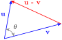

Subsection Components
We have seen that it can be useful to resolve a vector into horizontal and vertical components. We can also break a vector into components that point in other directions.
Imagine the following experiment: Delbert holds a ball at shoulder height and then drops it, so that it falls to the ground. Francine holds a ball at shoulder height on an inclined ramp, then releases it so that it rolls downhill. Which ball will reach the ground first?
Although gravity causes both balls to speed up, the free-falling ball will reach the ground first. The force of gravity pulls straight down, the same direction as the motion of the free-falling ball, but the rolling ball must move at an angle to the pull of gravity, along the surface of the ramp. Only part of the gravitational force accelerates the rolling ball, and the rest of the force is counteracted by the surface of the ramp. What fraction of the gravitational force causes the ball to roll?
In figure (a), the gravitational force \({\bf{F}}\) is resolved into the sum of two vectors, \({\bf{F}}={\bf{u}}+{\bf{v}}\text{,}\) where \({\bf{v}}\) points down the ramp, and \({\bf{u}}\) is perpendicular to the ramp. The magnitude of \({\bf{v}}\) is called the component of \({\bf{F}}\) in the direction of motion, and is denoted by \(\text{comp}_{\bf{v}}{\bf{F}}\text{.}\) This is the portion of the gravitational force that moves the ball. From figure (b), we see that \(\text{comp}_{\bf{v}}{\bf{F}} = \|{\bf{F}}\| \cos (\theta)\text{,}\) where \(\theta\) is the angle between \({\bf{F}}\) and \({\bf{v}}\text{.}\)
Component of a Vector.
The component of a vector \({\bf{F}}\) in the direction of vector \({\bf{v}}\) is
\begin{equation*}
\blert{\text{comp}_{\bf{v}}{\bf{F}} = \|{\bf{F}}\| \cos (\theta)}
\end{equation*}
where \(\theta\) is the angle between \({\bf{F}}\) and \({\bf{v}}\text{.}\)
With a little geometry, you can verify that in this example the angle \(\theta\) is the complement of the angle of inclination of the ramp, \(\alpha\text{.}\) (Think of similar triangles.) Now suppose that we increase the angle of inclination. As \(\alpha\) increases, \(\theta\) decreases, \(\cos (\theta)\) increases, and hence \(\text{comp}_{\bf{v}}{\bf{F}}\) increases. This result agrees with our experience: as the ramp gets steeper, the ball rolls faster.
Example 9.40.
Delbert uses a sheet of plywood as a ramp for his wheelbarrow. The ramp is inclined at an angle of \(15\degree\) to the horizontal. The plywood can support a maximum weight of 200 pounds. What weight will the ramp support?
Solution.
The component of the weight perpendicular to the ramp cannot be more than 200 pounds. If the weight of the wheelbarrow is \({\bf{w}}\text{,}\) and \({\bf{v}}\) is a vector perpendicular to the ramp, as shown below, then the angle between \({\bf{v}}\) and \({\bf{w}}\) is \(15\degree\text{,}\) by similar triangles. Thus, the component of \({\bf{w}}\) in the direction of \({\bf{w}}\) is
\begin{equation*}
\begin{aligned}[t]
\text{comp}_{\bf{v}}{\bf{w}} = \|{\bf{w}}\| \cos (15\degree) \amp = 200\\
\|{\bf{w}}\| (0.9659) \amp = 200\\
\|{\bf{w}}\| \amp = 207.06
\end{aligned}
\end{equation*}
The ramp can support no more than about 207 pounds.
Checkpoint 9.41.
Delbert pushes a lawn mower whose handle makes a \(40\degree\) angle with the horizontal. If he applies a force of 30 pounds in the direction of the handle, what is the component of the force in the horizontal direction?
Subsection Coordinate Form for Components
In the examples above, we computed the component of a force \({\bf{F}}\) in the direction of a vector \({\bf{v}}\) by knowing the angle between \({\bf{F}}\) and \({\bf{v}}\text{.}\) If the vectors are given in coordinate form (that is, \({\bf{v}} = a{\bf{i}} + b{\bf{j}}\)), we may not know the angle between them. Can we compute the component of a vector \({\bf{w}}\) in the direction of \({\bf{v}}\text{,}\) in terms of the coordinates of \({\bf{v}}\) and\({\bf{w}}\text{?}\)
Suppose \({\bf{v}} = a{\bf{i}} + b{\bf{j}}\) and \({\bf{w}} = c{\bf{i}} + d{\bf{j}}\text{,}\) as shown below. We will need to compute the cosine of \(\theta\) in terms of \(a,~ b,~ c,~\) and \(d\text{.}\)
First verify that
\begin{align*}
\cos (\alpha) \amp = \dfrac{a}{\|{\bf{v}}\|}~~~\text{and}~~~\sin (\alpha) = \dfrac{b}{\|{\bf{v}}\|}\\
\cos (\beta) \amp = \dfrac{c}{\|{\bf{w}}\|}~~~\text{and}~~~\sin (\beta) = \dfrac{d}{\|{\bf{w}}\|}
\end{align*}
Because \(\theta = \beta = \alpha\text{,}\) we use the subtraction formula for cosine.
\begin{align*}
\cos (\theta) \amp = \cos (\alpha) \cos (\beta) + \sin (\alpha) \sin (\beta)\\
\amp = \dfrac{a}{\|{\bf{v}}\|} \dfrac{c}{\|{\bf{w}}\|} + \dfrac{b}{\|{\bf{v}}\|} \dfrac{d}{\|{\bf{w}}\|}\\
\amp = \dfrac{1}{\|{\bf{v}}\| \|{\bf{w}}\|} (ac+bd)
\end{align*}
And finally,
\begin{equation*}
\text{comp}_{\bf{v}}{\bf{w}} = \|{\bf{w}}\| \cos (\theta) = \dfrac{ac+bd}{\|{\bf{v}}\|}
\end{equation*}
Now we have a fromula for the component of a vector \({\bf{w}}\) in the direction of a vector \({\bf{v}}\text{.}\)
Component of a Vector in Coordinate Form.
If \({\bf{v}} = a{\bf{i}} + b{\bf{j}}\) and \({\bf{w}} = c{\bf{i}} + d{\bf{j}}\text{,}\) then the component of \({\bf{w}}\) in the direction of \({\bf{v}}\) is given by
\begin{equation*}
\blert{\text{comp}_{\bf{v}}{\bf{w}} =\dfrac{ac+bd}{\|{\bf{v}}\|}}
\end{equation*}
Example 9.43.
Compute the component of \({\bf{w}} = 6{\bf{i}} + 2{\bf{j}}\) in the direction of \({\bf{v}} = 4{\bf{i}} + 3{\bf{j}}\text{.}\)
Find the vector component of \({\bf{w}}\) in the direction of \({\bf{v}}\text{.}\)
Find the vector component of \({\bf{w}}\) perpendicular to \({\bf{v}}\text{.}\)
Solution.
We use the formula derived above.
\begin{equation*}
\text{comp}_{\bf{v}}{\bf{w}} =\dfrac{ac+bd}{\|{\bf{v}}\|} = \dfrac{4(6)+3(2)}{\sqrt{4^2+3^2}} = \dfrac{30}{5} = 6
\end{equation*}
Remember that the component of \({\bf{w}}\) in the direction of \({\bf{v}}\) is a scalar; it is the length of the projection of \({\bf{w}}\) onto \({\bf{v}}\text{.}\)
We would like to find a vector \({\bf{q}}\) of length 6 in the direction of \({\bf{v}}\text{,}\) as shown at right. Because \(\|{\bf{v}}\| = 5\text{,}\) we scale the components of \({\bf{v}}\) by \(\dfrac{6}{5}\) to get
\begin{equation*}
{\bf{q}} = \dfrac{6}{5} \left(4{\bf{i}} + 3{\bf{j}}\right) = \dfrac{24}{5}{\bf{i}} + \dfrac{18}{5}{\bf{j}}
\end{equation*}
Because \({\bf{w}} ={\bf{p}} + {\bf{q}}\text{,}\) where \({\bf{p}}\) is perpendicular to \({\bf{q}}\text{,}\) we have
\begin{equation*}
{\bf{p}} ={\bf{w}} - {\bf{q}} = (6{\bf{i}} + 2{\bf{j}}) - \left(\dfrac{24}{5}{\bf{i}} + \dfrac{18}{5}{\bf{j}}\right) = \dfrac{6}{5}{\bf{i}} - \dfrac{8}{5}{\bf{j}}
\end{equation*}
Checkpoint 9.44.
Write the vector \({\bf{w}} = 6{\bf{i}} + 2{\bf{j}}\) as the sum of two components, one parallel to \({\bf{v}} = {\bf{i}} + {\bf{j}}\) and the other perpendicular to \({\bf{v}}\text{.}\)
Answer.
\({\bf{w}} = (4{\bf{i}}+4{\bf{j}}) + (2{\bf{i}}-2{\bf{j}})\)
Subsection The Dot Product
The expression \(ac+bd\text{,}\) which we encountered above as part of the formula for \(\text{comp}_{\bf{v}}{\bf{w}}\text{,}\) is quite useful and is given a name; it is called the dot product of the vectors \({\bf{v}} = a{\bf{i}} + b{\bf{j}}\) and \({\bf{w}} = c{\bf{i}} + d{\bf{j}}\text{.}\)
It is easy to remember the formula for the dot product if we think of adding the product of the \({\bf{i}}\)-components and the product of the \({\bf{j}}\)-components of the two vectors.
Dot Product.
The dot product of two vectors \(~{\bf{v}} = v_1{\bf{i}} + v_2 {\bf{j}}~\) and \(~{\bf{w}} = w_1{\bf{i}} + w_2 {\bf{j}}~\) is the scalar
\begin{equation*}
\blert{{\bf{v}} \cdot {\bf{w}} = v_1w_1+v_2w_2}
\end{equation*}
Example 9.46.
Compute the dot product of \({\bf{v}} = 5{\bf{i}} - 3{\bf{j}}\) and \({\bf{w}} = 4{\bf{i}} + {\bf{j}}\text{.}\)
Solution.
We apply the formula above to find
\begin{equation*}
{\bf{v}} \cdot {\bf{w}} = 5(4)+(-3)(1) = 17
\end{equation*}
In the examples above, you can see that the dot product of two vectors is a scalar. For this reason, the dot product is also called the scalar product.
Checkpoint 9.47.
Compute the dot product of \({\bf{v}} = 6{\bf{i}} + 2{\bf{j}}\) and \({\bf{w}} = -2{\bf{i}} + 3{\bf{j}}\text{.}\)
We can now write the formula for \(\text{comp}_{\bf{v}}{\bf{w}}\) using the dot product.
\begin{equation*}
\text{comp}_{\bf{v}}{\bf{w}} = \|{\bf{w}}\| \cos (\theta) = \dfrac{ac+bd}{\|{\bf{v}}\|} = \dfrac{{\bf{v}} \cdot {\bf{w}}}{\|{\bf{v}}\|}
\end{equation*}
We have derived an alternate formula for a component of a vector.
Component of a Vector.
The component of \({\bf{w}}\) in the direction of \({\bf{v}}\) is the scalar
\begin{equation*}
\blert{\text{comp}_{\bf{v}}{\bf{w}} = \dfrac{{\bf{v}} \cdot {\bf{w}}}{\|{\bf{v}}\|}}
\end{equation*}
Example 9.48.
Compute the component of \({\bf{v}} = 5{\bf{i}} - 3{\bf{j}}\) in the direction of \({\bf{w}} = 4{\bf{i}} + {\bf{j}}\text{.}\)
Solution.
Using the formula above, we have \(\text{comp}_{\bf{w}}{\bf{v}} = \dfrac{{\bf{v}} \cdot {\bf{w}}}{\|{\bf{w}}\|}\text{.}\) We first compute \({\bf{v}} \cdot {\bf{w}}\) and \(\|{\bf{w}}\|\text{.}\)
\begin{equation*}
{\bf{v}} \cdot {\bf{w}} = 5(4) + (-3)(1) = 17~~\text{and}~~\|{\bf{w}}\| = \sqrt{4^2+1^2}=\sqrt{17}
\end{equation*}
Thus,
\begin{equation*}
\text{comp}_{\bf{w}}{\bf{v}} = \dfrac{{\bf{v}} \cdot {\bf{w}}}{\|{\bf{w}}\|} = \dfrac{17}{\sqrt{17}} = \sqrt{17}
\end{equation*}
The length of the projection of \({\bf{v}}\) in the direction of \({\bf{w}}\) is \(\sqrt{17}\) units, as shown at right.
Checkpoint 9.49.
Compute the component of \({\bf{u}} = 2{\bf{i}} + 3{\bf{j}}\) in the direction of \({\bf{v}} = 6{\bf{i}} + 5{\bf{j}}\text{.}\)
Answer.
\(\dfrac{27}{\sqrt{61}}\)
Subsection Geometric Meaning of the Dot Product
An even more important relationship, which gives geometric meaning to the dot product, follows from the formula for a component. We now have two ways to compute the component of \({\bf{w}}\) in the direction of \({\bf{v}}\text{:}\)
\begin{equation*}
\text{comp}_{\bf{v}}{\bf{w}} = \|{\bf{w}}\| \cos \theta~~~~~~\text{and}~~~~~~\text{comp}_{\bf{v}}{\bf{w}} = \dfrac{{\bf{v}} \cdot {\bf{w}}}{\|{\bf{v}}\|}
\end{equation*}
Equating these two expressions, we find
\begin{equation*}
\|{\bf{w}}\| \cos (\theta) = \dfrac{{\bf{v}} \cdot {\bf{w}}}{\|{\bf{v}}\|}
\end{equation*}
or \(\|{\bf{v}}\|\|{\bf{w}}\| \cos \theta = {\bf{v}} \cdot {\bf{w}}\text{.}\) This is a geometric formula for the dot product.
Geometric Form for the Dot Product.
The dot product of two vectors \({\bf{v}}\) and \({\bf{w}}\) is the scalar
\begin{equation*}
\blert{{\bf{v}} \cdot {\bf{w}} = \|{\bf{v}}\|\|{\bf{w}}\| \cos (\theta)}
\end{equation*}
where \(\theta\) is the angle between the vectors.
The dot product is a way of multiplying two vectors that depends on the angle between them.
If \(\theta = 0\degree\text{,}\) so that \({\bf{v}}\) and \({\bf{w}}\) point in the same direction, then \(\cos (\theta) = 1\) and \({\bf{v}} \cdot {\bf{w}}\) is just the product of their lengths, \(\|{\bf{v}}\|\|{\bf{w}}\|\text{.}\)
If \({\bf{v}}\) and \({\bf{w}}\) are perpendicular, then \(\cos (\theta) = 0\text{,}\) so \({\bf{v}} \cdot {\bf{w}} = 0\text{.}\) (Two vectors \({\bf{v}}\) and \({\bf{w}}\) are said to be orthogonal if their dot product is zero.)
If \(\theta\) is between \(0\degree\) and \(90\degree\text{,}\) the dot product multiplies the length of \({\bf{v}}\) times the component of \({\bf{w}}\) in the direction of \({\bf{v}}\text{.}\)
Example 9.50.
Show that the vectors \({\bf{v}} = 2{\bf{i}}+6{\bf{j}}\) and \({\bf{w}} = -9{\bf{i}}+3{\bf{j}}\) are orthogonal.
Solution.
We compute the dot product of the vectors.
\begin{equation*}
{\bf{v}} \cdot {\bf{w}} = 2(-9)+6(3) = 0
\end{equation*}
Thus, \(\|{\bf{v}}\|\|{\bf{w}}\| \cos (\theta) = 0\text{,}\) so \({\bf{v}}\) and \({\bf{w}}\) are orthogonal. Because neither \(\|{\bf{v}}\| = 0\) or \(\|{\bf{w}}\| = 0\text{,}\) it must be the case that \(\cos (\theta) = 0\text{,}\) so \(\theta = 90\degree\) or \(270\degree\text{.}\)
Checkpoint 9.51.
Show that the vectors \({\bf{v}} = a{\bf{i}}+b{\bf{j}}\) and \({\bf{w}} = -b{\bf{i}}+a{\bf{j}}\) are orthogonal.
Find a vector \({\bf{w}}\) perpendicular to \({\bf{v}} = -3{\bf{i}}-5{\bf{j}}\text{.}\)
Answer.
\(\displaystyle {\bf{u}} \cdot {\bf{v}} = -ab + ab = 0\)
\(\displaystyle 5{\bf{i}}-3{\bf{j}}\)
Using the dot product, we can find the angle between two vectors.
Angle Between Two Vectors.
The angle \(\theta\) between two vectors \({\bf{v}}\) and \({\bf{w}}\) is given by
\begin{equation*}
\blert{\cos (\theta) = \dfrac{{\bf{v}} \cdot {\bf{w}}}{\|{\bf{v}}\| \|{\bf{w}}\|}}
\end{equation*}
Example 9.52.
Find the angle between the vectors \({\bf{u}} = -3{\bf{i}}+2{\bf{j}}\) and \({\bf{v}} = 5{\bf{i}}+3{\bf{j}}\text{.}\)
Solution.
We first compute \({\bf{u}} \cdot {\bf{v}}\) and the magnitude of each vector.
\begin{align*}
{\bf{u}} \cdot {\bf{v}} \amp = -3(5)+2(3)=-9\\
\|{\bf{u}}\| \amp = \sqrt{(-3)^2 + 2^2} = \sqrt{13}\\
\|{\bf{v}}\| \amp = \sqrt{5^2 + 3^2} = \sqrt{34}
\end{align*}
Then we apply the formula for \(\cos (\theta)\text{.}\)
\begin{equation*}
\begin{aligned}[t]
\cos (\theta) \amp = \dfrac{{\bf{v}} \cdot {\bf{w}}}{\|{\bf{v}}\| \|{\bf{w}}\|} = \dfrac{-9}{\sqrt{13}\sqrt{34}} = -0.4281\\
\theta \amp = \cos^{-1}(-0.4281) = 115.35\degree\\
\end{aligned}
\end{equation*}
The angle between the vectors is \(115.35\degree\text{.}\)
Checkpoint 9.53.
Find the angle between the vectors \({\bf{u}} = 4{\bf{i}}-6{\bf{j}}\) and \({\bf{v}} = 2{\bf{i}}+8{\bf{j}}\text{.}\)
Review the following skills you will need for this section.
Skills Refresher 9.3.
Find the height \(h\) of the triangle.
How far is the foot of the altitude from the vertex of the \(18\degree\) angle?
Find the height \(h\) of the triangle.
Find the length of the third side of the triangle.
How far north is the tower from the airport? How far east?
What is the distance from \(A\) to \(P\text{?}\)
Find the distance from \(A\) to \(C\text{.}\)
How far north is point \(C\) from point \(B\text{?}\)
\(\underline{\qquad\qquad\qquad\qquad}\)
\(\displaystyle 1.55\)
\(\displaystyle 4.76\)
\(\displaystyle 19.57\)
\(\displaystyle 81.83\)
36.92 mi, 15.63 mi
16.08 mi
\(\displaystyle 21.87\)
\(\displaystyle 5.95\)
Exercises Homework 9-3
Exercise Group.
For Problems 1–6, find the component of \({\bf{w}}\) in the direction of \({\bf{v}}\text{.}\)
1.
\({\bf{w}} = 5{\bf{i}}+9{\bf{j}},\) \(~~{\bf{v}} = 3{\bf{i}}+2{\bf{j}}\)
2.
\({\bf{w}} = 7{\bf{i}}+4{\bf{j}},\) \(~~{\bf{v}} = 2{\bf{i}}+3{\bf{j}}\)
3.
\({\bf{w}} = -6{\bf{i}}+5{\bf{j}},\) \(~~{\bf{v}} = {\bf{i}}+{\bf{j}}\)
4.
\({\bf{w}} = 10{\bf{i}}-14{\bf{j}},~~{\bf{v}} = {\bf{i}}+{\bf{j}}\)
5.
\({\bf{w}} = 4{\bf{i}}-3{\bf{j}},\) \(~~{\bf{v}} = -{\bf{i}}+2{\bf{j}}\)
6.
\({\bf{w}} = -2{\bf{i}}-3{\bf{j}},~~{\bf{v}} = {\bf{i}}-2{\bf{j}}\)
Exercise Group.
For Problems 7–10,
Resolve \({\bf{w}}\) into two components, one parallel to \({\bf{v}}\) and the other orthogonal to \({\bf{v}}\text{.}\)
Sketch both vectors and the vector components.
7.
\({\bf{w}} = 8{\bf{i}}+4{\bf{j}},\) \(~~{\bf{v}} = 2{\bf{i}}+3{\bf{j}}\)
8.
\({\bf{w}} = -3{\bf{i}}+7{\bf{j}},\) \(~~{\bf{v}} = 4{\bf{i}}+2{\bf{j}}\)
9.
\({\bf{w}} = 6{\bf{i}}-2{\bf{j}},\) \(~~{\bf{v}} = {\bf{i}}-{\bf{j}}\)
10.
\({\bf{w}} = -5{\bf{i}}+3{\bf{j}},\) \(~~{\bf{v}} = -{\bf{i}}-3{\bf{j}}\)
Exercise Group.
For Problems 11–18, compute the dot product \({\bf{u}} \cdot {\bf{v}}\text{.}\)
11.
\({\bf{u}} = 3{\bf{i}}+7{\bf{j}},\) \(~~{\bf{v}} = -2{\bf{i}}+4{\bf{j}}\)
12.
\({\bf{u}} = -1.3{\bf{i}}+5.6{\bf{j}},\) \(~~{\bf{v}} = 3{\bf{i}}-5{\bf{j}}\)
13.
\({\bf{u}} = 3{\bf{i}}-4{\bf{j}},\) \(~~{\bf{v}} = 20{\bf{i}}+15{\bf{j}}\)
14.
\({\bf{u}} = 2{\bf{i}}+{\bf{j}},\) \(~~{\bf{v}} = 6{\bf{i}}+3{\bf{j}}\)
15.
\({\bf{u}}\) has magnitude 3 and direction \(27\degree\text{,}\) and \({\bf{u}}\) has magnitude 8 and direction \(33\degree\text{.}\)
16.
\({\bf{u}}\) has magnitude \(\sqrt{7}\) and direction \(112\degree\text{,}\) and \({\bf{u}}\) has magnitude \(\sqrt{14}\) and direction \(157\degree\text{.}\)
16.
\({\bf{u}}\) has magnitude \(\sqrt{7}\) and direction \(112\degree\text{,}\) and \({\bf{u}}\) has magnitude \(\sqrt{14}\) and direction \(157\degree\text{.}\)
17.
18.
Exercise Group.
For Problems 19–22, decide whether the pair of vectors is orthogonal.
19.
\(2{\bf{i}}+3{\bf{j}}~\) and \(-3{\bf{i}}-2{\bf{j}}\)
20.
\(-5{\bf{i}}+7{\bf{j}}~\) and \(~7{\bf{i}}+5{\bf{j}}\)
21.
\(4{\bf{i}}+6{\bf{j}}~\) and \(-15{\bf{i}}+10{\bf{j}}\)
22.
\(3{\bf{i}}-4{\bf{j}}~\) and \(-3{\bf{i}}+4{\bf{j}}\)
Exercise Group.
For Problems 23–26, find the angle between the vectors.
23.
\(3{\bf{i}}+5{\bf{j}}~\) and \(~2{\bf{i}}+4{\bf{j}}\)
24.
\({\bf{i}}-2{\bf{j}}~\) and \(-2{\bf{i}}-3{\bf{j}}\)
25.
\(4{\bf{i}}-8{\bf{j}}~\) and \(~6{\bf{i}}+4{\bf{j}}\)
26.
\(-6{\bf{i}}+8{\bf{j}}~\) and \(~18{\bf{i}}-24{\bf{j}}\)
Exercise Group.
For Problems 27–30, find a value of \(k\) so that \({\bf{v}}\) is orthogonal to \({\bf{w}}\text{.}\)
27.
\({\bf{w}}=8{\bf{i}}-3{\bf{j}},\) \(~{\bf{v}}= 3{\bf{i}}+k{\bf{j}}\)
28.
\({\bf{w}}=2{\bf{i}}+7{\bf{j}},\) \(~{\bf{v}}=k{\bf{i}}+4{\bf{j}}\)
29.
\({\bf{w}}=-2{\bf{i}}-5{\bf{j}},\) \(~{\bf{v}}=k{\bf{i}}+4{\bf{j}}\)
30.
\({\bf{w}}=5{\bf{i}}+3{\bf{j}},\) \(~{\bf{v}}=-2{\bf{i}}+k{\bf{j}}\)
Exercise Group.
For Problems 31–36, evaluate the expression for the vectors
\begin{equation*}
{\bf{u}}=2{\bf{i}}+5{\bf{j}},~~{\bf{v}}=-3{\bf{i}}+4{\bf{j}},~~{\bf{w}}=3{\bf{i}}-2{\bf{j}}
\end{equation*}
31.
\({\bf{w}} \cdot ({\bf{u}}+{\bf{v}})\)
32.
\({\bf{w}} \cdot {\bf{u}} + {\bf{w}} \cdot {\bf{v}}\)
33.
\(({\bf{u}} \cdot {\bf{v}}) {\bf{w}}\)
34.
\(({\bf{u}} \cdot {\bf{v}})({\bf{u}} \cdot {\bf{w}})\)
35.
\(({\bf{u}}+{\bf{v}}) \cdot ({\bf{u}}-{\bf{v}})\)
36.
\(\dfrac{{\bf{w}} \cdot {\bf{v}}}{{\bf{w}} \cdot {\bf{w}}} {\bf{w}}\)
37.
Gary pulls a loaded wagon along a flat road. The handle of the wagon makes an angle of \(50\degree\) to the horizontal. If Gary pulls with a force of 60 pounds, find the component of the force in the direction of motion.
38.
Wassily is trying to topple a statue by pulling on a rope tied to the statue’s upraised arm. The rope is making a \(35\degree\) angle from horizontal. If Wassily is pulling on the rope with a force of 250 pounds, find the component of the force in the horizontal direction.
39.
An SUV weighing 6200 pounds is parked on a hill with slope \(12\degree\text{.}\) Find the force needed to keep the SUV from rolling down the hill.
40.
Steve’s boat is headed due north, and the sail points at an angle of \(15\degree\) east of north. The wind is blowing in the direction \(60\degree\) west of south, but because of the difference in air pressure between the front and back surfaces of the sail, the boat experiences a force of 400 pounds in the direction the sail is facing. Find the component of the force in the direction of the boat’s motion.
41.
Find unit vectors \({\bf{u}}\) and \({\bf{v}}\) in the directions of \({\bf{i+j}}\) and \({\bf{i-j}}\text{.}\)
Show that \({\bf{u}}\) and \({\bf{v}}\) are orthogonal.
Find the components of \({\bf{w}} = 3{\bf{i}}+8{\bf{j}}\) in the directions of \({\bf{u}}\) and \({\bf{v}}\text{.}\)
Sketch the vectors \({\bf{u}},~{\bf{v}}\) and \({\bf{w}}\text{,}\) and show the components of \({\bf{w}}\text{.}\)
42.
Find unit vectors \({\bf{u}}\) and \({\bf{v}}\) in the directions of \(30\degree\) and \(120\degree\text{.}\)
Show that \({\bf{u}}\) and \({\bf{v}}\) are orthogonal.
Find the components of \({\bf{w}} = -4{\bf{i}}+4{\bf{j}}\) in the directions of \({\bf{u}}\) and \({\bf{v}}\text{.}\)
Sketch the vectors \({\bf{u}},~{\bf{v}}\) and \({\bf{w}}\text{,}\) and show the components of \({\bf{w}}\text{.}\)
Exercise Group.
For Problems 43–48, let \({\bf{u}} = a{\bf{i}}+b{\bf{j}}\) and \({\bf{v}} = c{\bf{i}}+d{\bf{j}}\text{.}\)
43.
Show that \({\bf{v}} \cdot {\bf{v}} = \|{\bf{v}}\|^2\text{.}\)
44.
If \(\|{\bf{u}}\|=1\text{,}\) show that \(\text{comp}_{\bf{u}}{\bf{v}}={\bf{u}} \cdot {\bf{v}}\text{.}\)
45.
Show that \(k{\bf{u}} \cdot {\bf{v}} = k({\bf{u}} \cdot {\bf{v}}) = {\bf{u}} \cdot k{\bf{v}}\text{.}\)
46.
Prove the distributive law: \({\bf{u}} \cdot ({\bf{v}}+{\bf{w}})= {\bf{u}} \cdot {\bf{v}}+{\bf{u}} \cdot {\bf{w}}\text{.}\)
47.
Show that \(({\bf{u}}-{\bf{v}}) \cdot ({\bf{u}}+{\bf{v}}) = \|{\bf{u}}\|^2 - \|{\bf{v}}\|^2\text{.}\)
48.
If \(\|{\bf{u}}\|=\|{\bf{v}}\|\text{,}\) show that \({\bf{u}}+{\bf{v}}\) is perpendicular to \({\bf{u}}-{\bf{v}}\text{.}\)
49.
Show that the component of \({\bf{v}} = a{\bf{i}}+b{\bf{j}}\) in the direction of \({\bf{i}}\) is \(a\text{,}\) and the component of \({\bf{v}}\) in the direction of \({\bf{j}}\) is \(b\text{.}\)
50.
Show that the dot product \({\bf{u}} \cdot {\bf{v}}\) gives the length of \({\bf{v}}\) times the coponent of \({\bf{u}}\) in the direction of \({\bf{v}}\text{.}\)
51.
Start from the geometric definition \({\bf{v}} \cdot {\bf{w}} = \|{\bf{v}}\|\|{\bf{w}}\| \cos (\theta)\) and show that \({\bf{i}} \cdot {\bf{i}}=1,~~{\bf{j}} \cdot {\bf{j}}=1\) and \({\bf{i}} \cdot {\bf{j}}=0\text{.}\)
Use part (a) and Problems 45 and 46 to derive the coordinate definition of \({\bf{v}} \cdot {\bf{w}}\text{.}\)
52.
Show that \(({\bf{v}}+{\bf{w}}) \cdot ({\bf{v}}+{\bf{w}}) = \|{\bf{v}}\|^2 + \|{\bf{w}}\|^2 + 2({\bf{v}} \cdot {\bf{w}})\)
Use part (a) to prove the triangle inequality:
\begin{equation*}
\|{\bf{v}}+{\bf{w}}\| \le \|{\bf{v}}\|+\|{\bf{w}}\|
\end{equation*}
53.
Use the dot product to show that \(\|{\bf{u}}-{\bf{v}}\|^2 = \|{\bf{u}}\|^2+\|{\bf{v}}\|^2 - 2\|{\bf{u}}\|\|{\bf{v}}\|\cos (\theta)\text{.}\)
Use the figure at right to explain why part (a) proves the law of cosines.

54.
If \({\bf{u}}\) is a unit vector, and the angle between \({\bf{u}}\) and \({\bf{i}}\) is \(\alpha\text{,}\) show that \({\bf{u}} = \cos (\alpha) {\bf{i}} + \sin (\alpha) {\bf{j}}\text{.}\)
Suppose \({\bf{u}}\) and \({\bf{v}}\) are unit vectors, as shown in the figure at right. Use the dot product \({\bf{u}} \cdot {\bf{v}}\) to prove that
\begin{equation*}
\cos (\beta - \alpha) = \cos (\beta) \cos (\alpha) + \sin (\beta) \sin (\alpha)
\end{equation*}